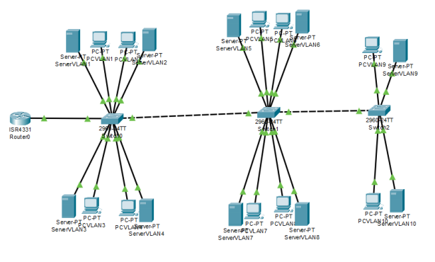
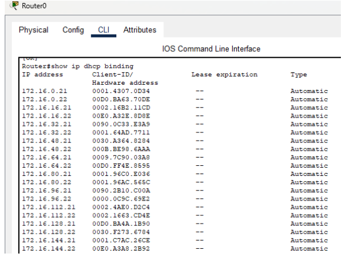
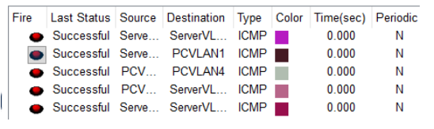
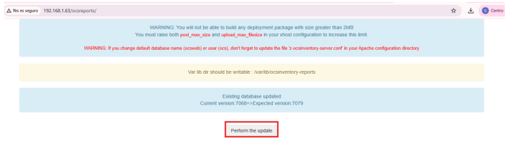
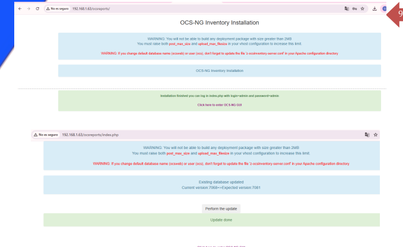
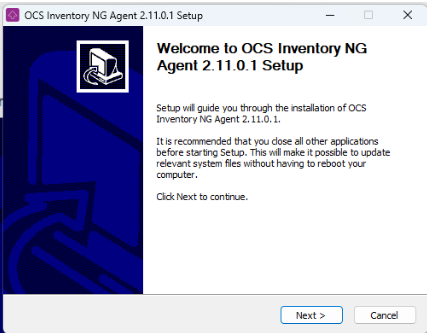
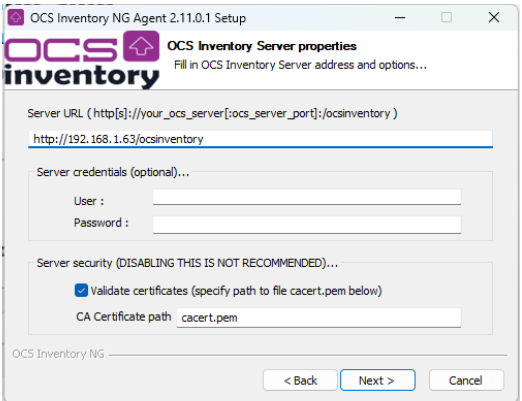
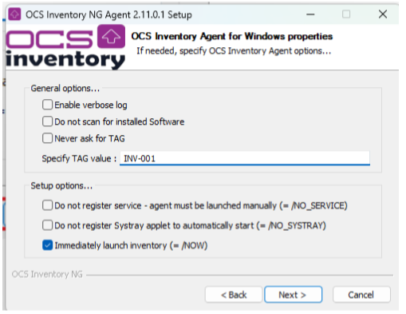

Introducción
En esta actividad se realizó el diseño lógico y estructural de la red corporativa utilizando Cisco Packet Tracer y Ubuntu Server.
También se configuraron VLANs, direccionamiento IP, DHCP y el sistema de inventariado OCS Inventory NG.

Esquema de Subredes
La red principal utilizada fue:
172.16.0.0/16
Para segmentar la infraestructura se aplicó subnetting utilizando máscara /20.
Esto permitió dividir la red en varias VLANs independientes.
- VLAN1 → 172.16.0.0/20
- VLAN2 → 172.16.16.0/20
- VLAN3 → 172.16.32.0/20

Diseño de Topología
La topología fue diseñada utilizando Cisco Packet Tracer.
Se utilizaron:
- Router Cisco ISR4331
- Switches Cisco 2960
- Servidores Ubuntu
- Equipos cliente Windows
Configuración DHCP
Se configuró DHCP dinámico para asignar automáticamente direcciones IP a los equipos cliente.
Para validar las concesiones DHCP se utilizó el siguiente comando:
show ip dhcp binding

Pruebas de Conectividad
Después de configurar las VLANs, se realizaron pruebas ICMP entre distintos segmentos de red.
La comunicación entre VLANs fue exitosa.

Instalación de OCS Inventory NG
Posteriormente se desplegó el sistema de inventariado OCS Inventory NG sobre Ubuntu Server.
Primero se actualizaron los paquetes del sistema:
sudo apt update && sudo apt upgrade -y
Después se añadieron los repositorios oficiales de OCS Inventory.
sudo apt install ocsinventory-server -y

También se habilitaron módulos necesarios de Apache:
sudo a2enmod proxy proxy_http rewrite
sudo systemctl restart apache2

Configuración del Agente Cliente
En el equipo Windows 11 se instaló el agente OCS Inventory para enviar información del sistema al servidor central.

Durante la configuración se especificó la URL del servidor:
http://192.168.1.x/ocsreports

También se asignó una etiqueta identificativa para registrar correctamente el dispositivo en el inventario.
Auditoría Final
Finalmente se accedió al panel web de OCS Inventory para comprobar el correcto registro del equipo cliente.
El sistema detectó correctamente el equipo Windows 11 Pro, validando el funcionamiento de la monitorización centralizada.
